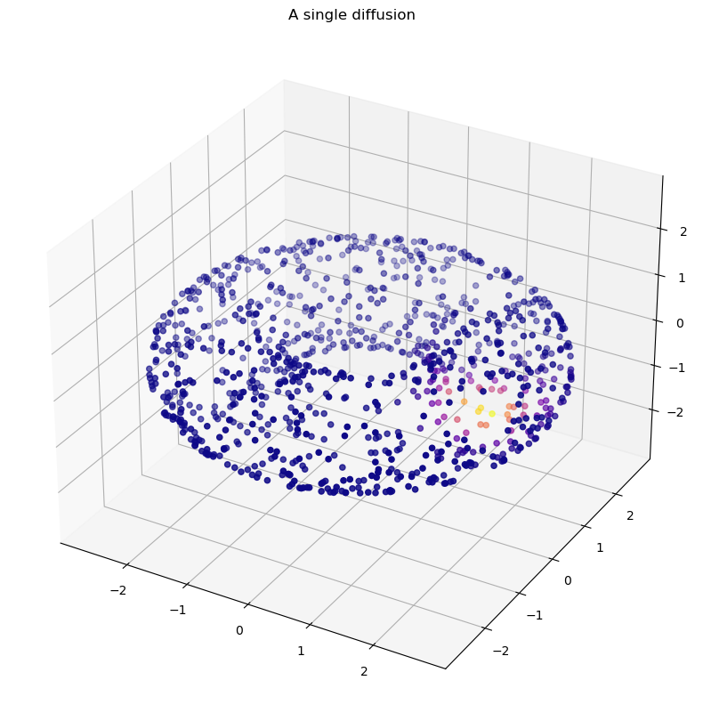
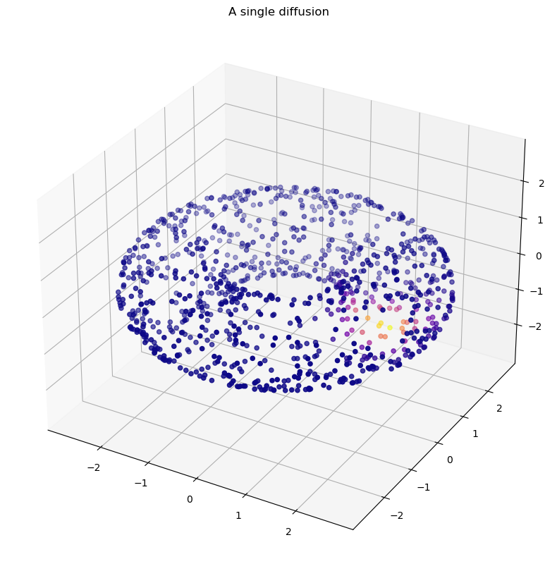
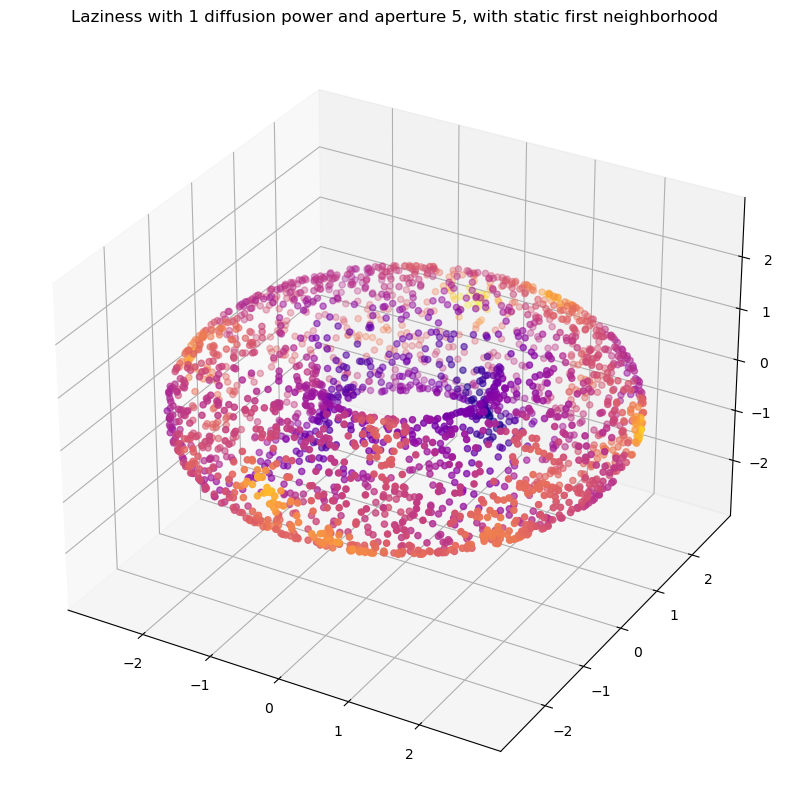
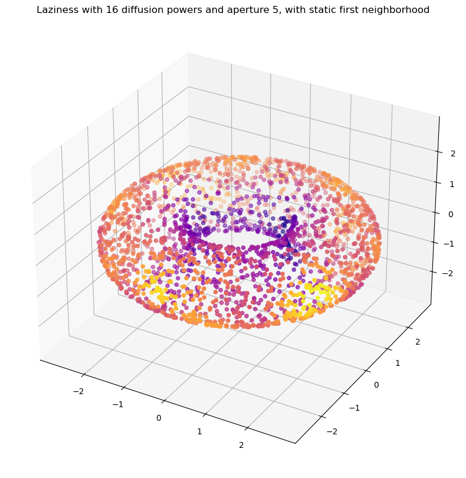
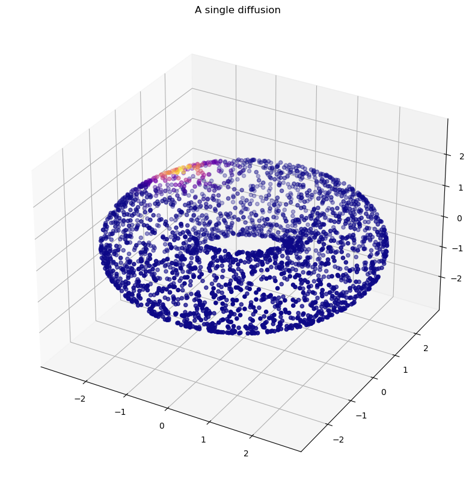
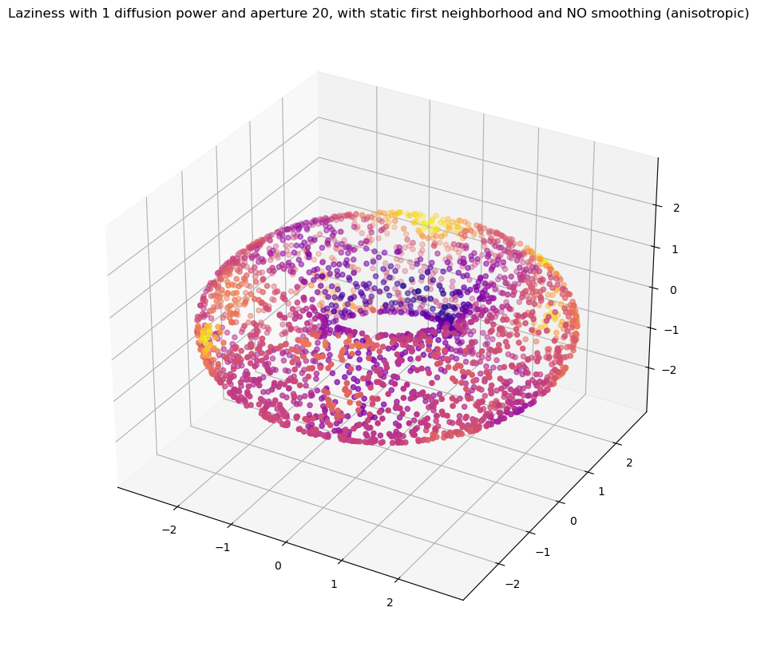
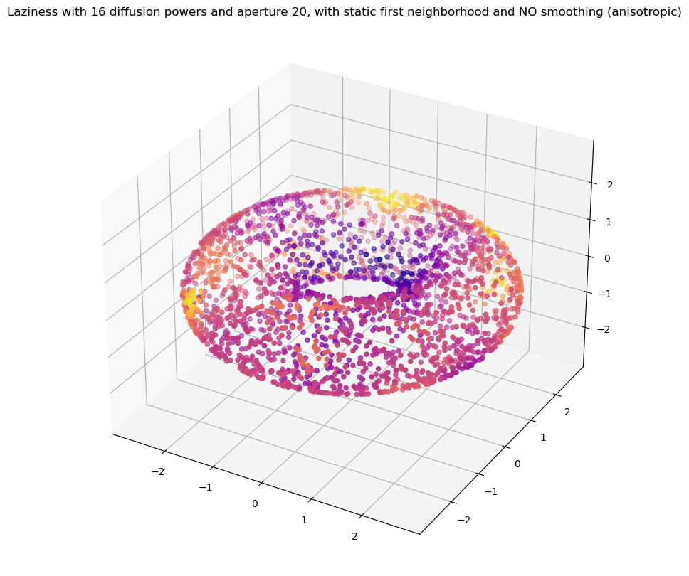
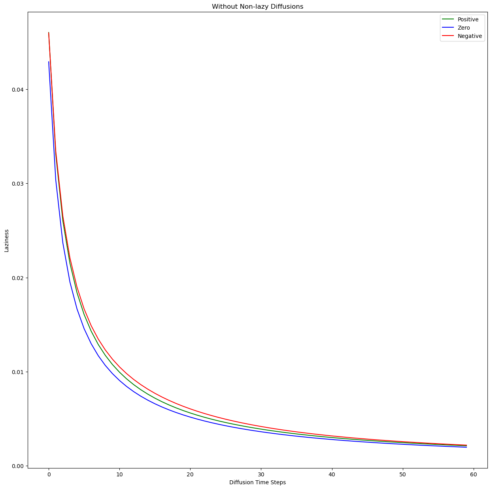
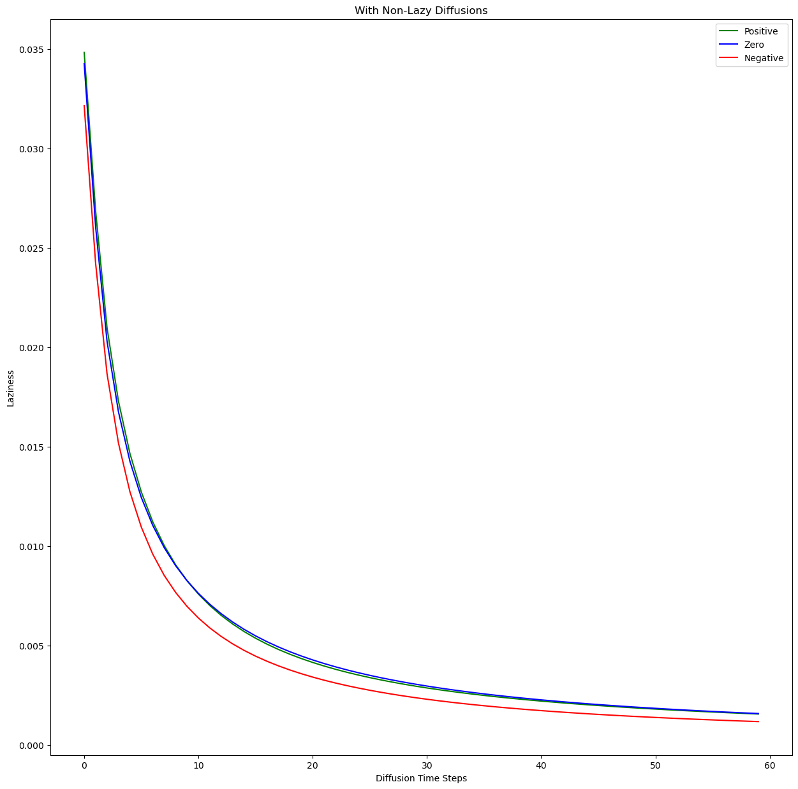

X,ks = torus(n=2000)
P_anis = DiffusionMatrix(X,kernel_type="adaptive anisotropic",k=10)
plot_3d(X,P_anis[0],"A single diffusion")
curvature (P, diffusion_powers=8, aperture=20, smoothing=1, verbose=False, return_density=False, dynamically_adjusting_neighborhood=False, precomputed_powered_P=None, non_lazy_diffusion=False, avg_transition_probability=True, use_min_threshold=False)
Diffusion Laziness Curvature Estimates curvature by measuring the amount of mass remaining within an initial neighborhood after t steps of diffusion. Akin to measuring the laziness of a random walk after t steps.
| Type | Default | Details | |
|---|---|---|---|
| P | n x n ndarray | The diffusion matrix of the graph | |
| diffusion_powers | int | 8 | Number of steps of diffusion to take before measuring the laziness, by default 8 |
| aperture | int | 20 | The size of the initial neighborhood, from which the percentage of mass remaining in this neighborhood is calculated, by default 20 |
| smoothing | int | 1 | Amount of smoothing to apply. Currently works by multiplying the raw laziness values with the diffusion operator, as a kind of iterated weighted averaging; by default 1 |
| verbose | bool | False | Print diagnostics, by default False |
| return_density | bool | False | Return the number of neighbors each point shares, by default False |
| dynamically_adjusting_neighborhood | bool | False | Whether to give each point the same initial neighborhood size, by default False |
| precomputed_powered_P | NoneType | None | Optionally pass a precomputed powered diffusion operator, to speed up computation, by default None |
| non_lazy_diffusion | bool | False | |
| avg_transition_probability | bool | True | |
| use_min_threshold | bool | False | |
| Returns | length n array | The laziness curvature values for each point |
X,ks = torus(n=2000)
P_anis = DiffusionMatrix(X,kernel_type="adaptive anisotropic",k=10)
plot_3d(X,P_anis[0],"A single diffusion")
To compute the curvature of each node, pass the diffusion matrix into the curvature function.
The main parameter to experiment with is diffusion_powers, which specifies how many diffusions should be performed before taking the laziness. If this parameter is too small, the diffusion curvature may resemble density-based noise.
Let’s visualize a single diffusion here:
Looks fairly good. It’s too small to bleed across the torus, so it should emphasize the step-wise nature of the random-walk laziness calculation.
The indication that this method is working is that it doesn’t work for a single power of diffusion, but does work for higher powers of diffusion.
Any correlation with curvature after a single power of diffusion is accidental – arising from density, or geometry. In the torus, we must be careful, as the number of neighbors included can alone influence the outcome of the laziness – with more neighbors likely to be included in the inside ring of the torus.
So, here’s the (hopefully) un-correlated single-step laziness.
plot_3d(X,ks,title="Laziness with 1 diffusion power and aperture 5, with static first neighborhood")
Here we see some patchy correlation with curvature – it seems that the inside saddle of the torus influences the shape of the diffusion power to the extent that it is noticeable. However, the rest of the torus is spotty.
Let’s try higher diffusion steps.
t = 16
ks = curvature(P,diffusion_powers=t,aperture=5,dynamically_adjusting_neighborhood=False)
plot_3d(X,ks,title=f"Laziness with {t} diffusion powers and aperture 5, with static first neighborhood")
A higher diffusion power has elimated some of the patches, but not all of them.
This emphasizes that the density variations still contribute to significant local variations in the reported curvature.
Let’s try a means of addressing this via a fancier kernel.
X,ks = torus(n=5000)
P_anis = DiffusionMatrix(X,kernel_type="adaptive anisotropic",k=20)
plot_3d(X,P_anis[0],"A single diffusion")
Let’s see what a single diffusion step looks like here. Theoretically, the density normalization should diminish the initial patterns.
ks = curvature(P_anis,diffusion_powers=1,aperture=20,dynamically_adjusting_neighborhood=False,smoothing=1)
plot_3d(X,ks,title="Laziness with 1 diffusion power and aperture 20, with static first neighborhood and NO smoothing (anisotropic)")
Indeed, it anecdotally seems less visible. Here’s the full 16 powers:
ks = curvature(P_anis,diffusion_powers=1,aperture=20,dynamically_adjusting_neighborhood=False,smoothing=1)
plot_3d(X,ks,title="Laziness with 16 diffusion powers and aperture 20, with static first neighborhood and NO smoothing (anisotropic)")
Notice that this is much choppier a curvature value than the non-anisotropic adaptive kernel. We need additional powers of diffusion to recover the previous semblance of order.
Set the parameter non_lazy_diffusion to true, and the laziness curvature method will delete the diagonal of self-diffusion, and then renormalize the diffusion matrix. This will motivate the diffusion mass to move, and (one hopes) will reduce the number of steps necessary for the laziness to track with the curvature.
In order to examine this parameter, we’ll import a method from the future – the “laziness decay graph”. We’ll create a laziness decay graph of the torus with a minimally connected diffusion matrix, with and without non-lazy diffusion.
X, ks = torus(n=5000,seed=42)
P = DiffusionMatrix(X,kernel_type='adaptive',k=5)
decaying_lazy = laziness_decay(P, max_steps=60,aperture=5,adaptive_neighborhood=True,non_lazy_diffusion=False)fig, ax = plt.subplots(1,figsize=(15,15))
ax.plot(decaying_lazy[0],color='green',label='Positive')
ax.plot(decaying_lazy[2],color='blue',label='Zero')
ax.plot(decaying_lazy[1],color='red',label='Negative')
ax.legend()
ax.set_title("Without Non-lazy Diffusions")
ax.set_xlabel("Diffusion Time Steps")
ax.set_ylabel("Laziness")Text(0, 0.5, 'Laziness')
Now for the same thing with non-lazy diffusions.
decaying_lazy = laziness_decay(P, max_steps=60,aperture=5,adaptive_neighborhood=True,non_lazy_diffusion=True)Removing self-diffusionfig, ax = plt.subplots(1,figsize=(15,15))
ax.plot(decaying_lazy[0],color='green',label='Positive')
ax.plot(decaying_lazy[2],color='blue',label='Zero')
ax.plot(decaying_lazy[1],color='red',label='Negative')
ax.legend()
ax.set_title("With Non-Lazy Diffusions")
ax.set_xlabel("Diffusion Time Steps")
ax.set_ylabel("Laziness")Text(0, 0.5, 'Laziness')
Interesting. Removing the self-diffusion has a marked effect on the separation of the three states. It seems to impact negative curvature most, causing it to more rapidly dip below the others from the very first diffusion.
As might be expected, the contest between zero and positive curvature continues to take longer to resolve, though this method appears to help somewhat.